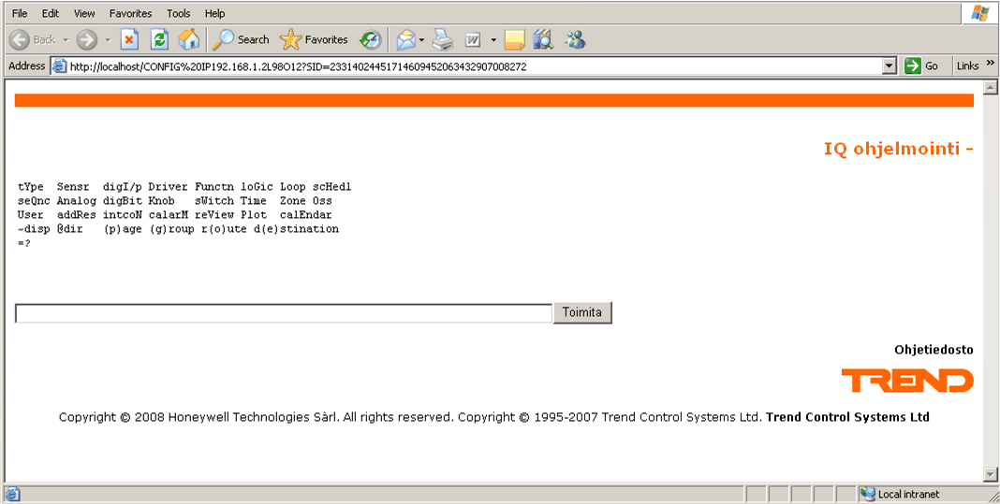

Alla näkyvä Ohjelmointinäyttö mahdollistaa pääsyn valitun IQ-järjestelmälaitteen ohjelmointitilaan. Siellä voit tehdä yksinkertaisia strategisia säätöjä. Ohjelmointitilassa kaikki näytön kehotteet ovat lähtöisin säätimestä ja kaikki näppäimistöltä syötetyt tiedot lähetetään säätimeen, kun napsautat Toimita.
